awk精讲
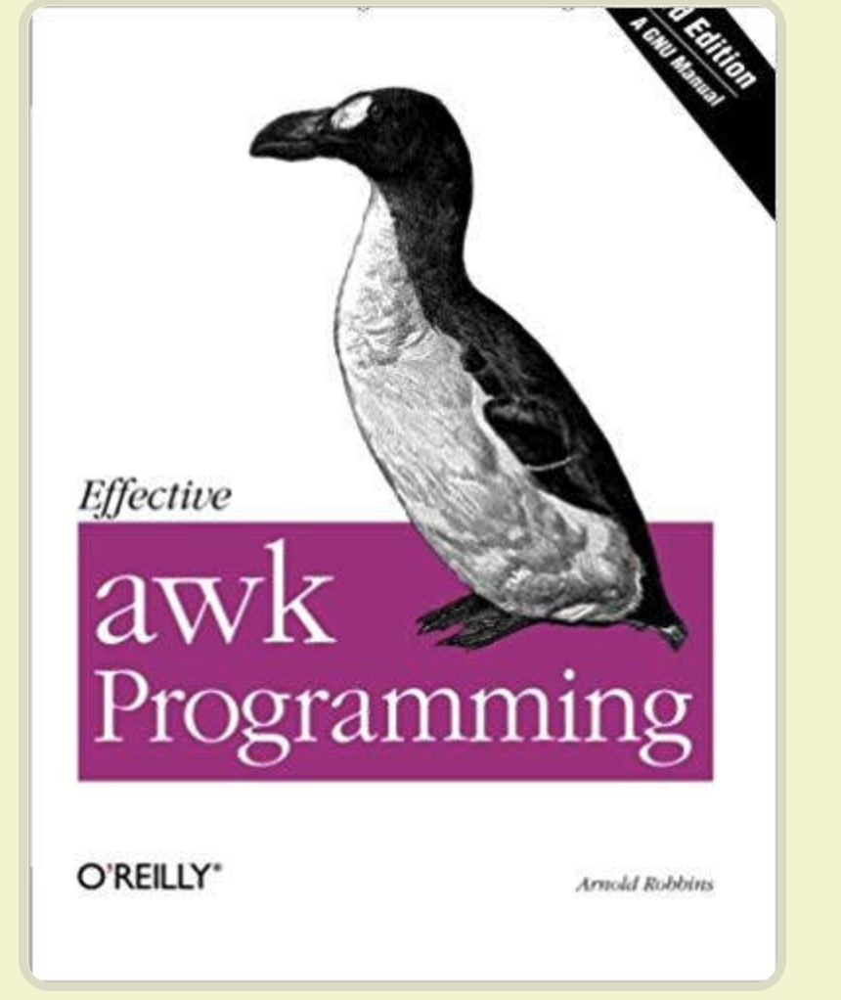
awk其实不仅仅是工具软件，还是一种编程语言。
不过，本文只介绍它的命令行用法，对于大多数场合，应该足够用了。
awk是什么
awk是一个强大的linux命令，有强大的文本格式化的能力，好比将一些文本数据格式化成专业的excel表的样式。
awk早期在Unix上实现，我们用的awk是gawk，是GUN awk的意思
awk更是是一门编程语言，支持条件判断、数组、循环等功能
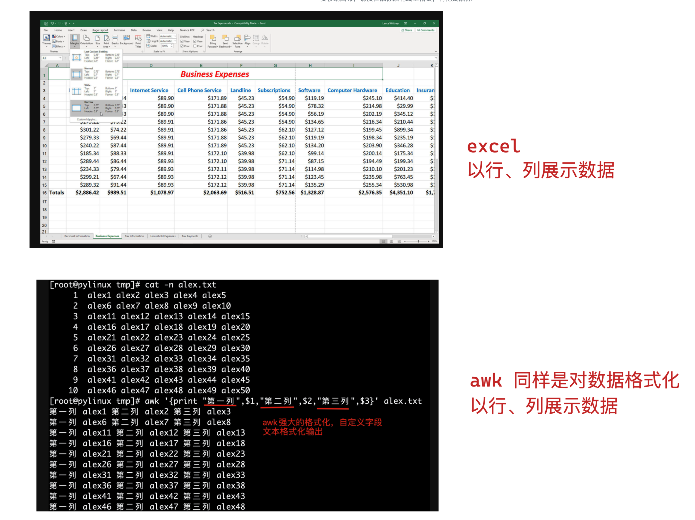
- awk以正则表达式（模式）来扫描、处理文本数据
awk 不仅仅是 linux 系统中的一个命令,而且是一种编程语言,可以用来处理数据和生成报告(excel)
处理的数据可以是一个或多个文件,可以是来自标准输入,也可以通过关单获取标准输入
awk 可以在命令行上直接编辑命令进行操作,也可以编写成 awk 程序（脚本文件）来进行更为复杂的运行
本章主要讲解 awk 命令行的直接使用。
再谈三剑客
- grep，擅长单纯的查找或匹配文本内容
- sed，更适合编辑、处理匹配到的文本内容
- awk，更适合格式化文本内容，对文本进行复杂处理后、更友好的显示
三个命令称之为Linux的三剑客
awk学完后的能力
以下部分内容需要结合shell编程
- 对文本行数据提取数据字段
- 模式、动作
- 正则模式匹配
- 匹配到数据后的动作
- awk执行流程
- awk内置变量（默认预留变量）
- awk数组
- awk循环、条件判断
- awk内置函数
- awk参数传递
- awk程序开发
awk运行环境
本章讲解的awk来自于GNU/Linux提供的gawk，也就是说awk还有其他版本，暂且忽略。
[242-yuchao-class01 root ~]#cat /etc/redhat-release
CentOS Linux release 7.5.1804 (Core)
[242-yuchao-class01 root ~]#uname -r
3.10.0-862.el7.x86_64
[242-yuchao-class01 root ~]#ll `which awk`
lrwxrwxrwx. 1 root root 4 Feb 25 18:52 /usr/bin/awk -> gawk
[242-yuchao-class01 root ~]#ll `which gawk`
-rwxr-xr-x. 1 root root 428584 Jun 29 2017 /usr/bin/gawk
awk的语法格式
awk 指令是由模式,动作,或者模式和动作的组合组成.
模式即 pattern,可以类似理解成 sed 的模式匹配,可以由表达式组成,也可以使两个正斜杠之间的正则表 达式.比如 NR==1,这就是模式,可以把他理解为一个条件.
动作即 action,是由在大括号里面的一条或多条语句组成,语句之间使用分号隔开,如下 awk 使用格式
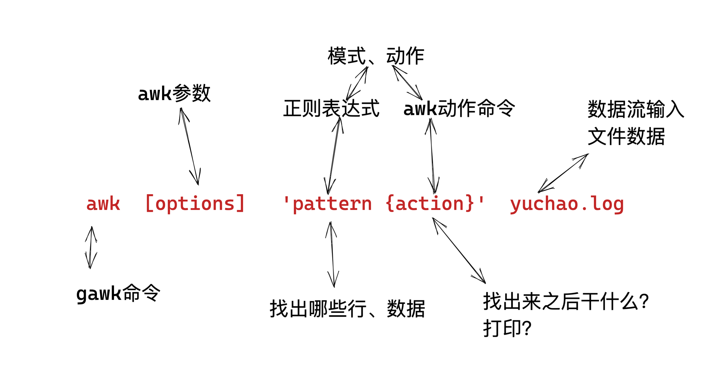
- Action指的是动作，awk擅长文本格式化，且输出格式化后的结果，因此最常用的动作就是
print
awk模式动作
生成测试数据
[242-yuchao-class01 root ~]#echo cc{01..50} | xargs -n 5
cc01 cc02 cc03 cc04 cc05
cc06 cc07 cc08 cc09 cc10
cc11 cc12 cc13 cc14 cc15
cc16 cc17 cc18 cc19 cc20
cc21 cc22 cc23 cc24 cc25
cc26 cc27 cc28 cc29 cc30
cc31 cc32 cc33 cc34 cc35
cc36 cc37 cc38 cc39 cc40
cc41 cc42 cc43 cc44 cc45
cc46 cc47 cc48 cc49 cc50
写入文件
echo cc{01..50} | xargs -n 5 > yuchao.log
初体验awk，提取第一列数据，仅使用打印动作
[242-yuchao-class01 root ~]#awk '{print $1}' yuchao.log
cc01
cc06
cc11
cc16
cc21
cc26
cc31
cc36
cc41
cc46
加上模式、和动作，比如指定行号
NR>=2&&NR<=5 是awk的模式，NR也是内置变量，
[242-yuchao-class01 root ~]#awk 'NR>=2&&NR<=5{print $0}' yuchao.log
cc06 cc07 cc08 cc09 cc10
cc11 cc12 cc13 cc14 cc15
cc16 cc17 cc18 cc19 cc20
cc21 cc22 cc23 cc24 cc25
以及指定打印某个字段的数据，如$3
[242-yuchao-class01 root ~]#awk 'NR>=2&&NR<=5{print $3}' yuchao.log
cc08
cc13
cc18
cc23
限定模式、打印动作、以及显示对应行号
[242-yuchao-class01 root ~]#awk 'NR>=2{print $0,NR}' yuchao.log
cc06 cc07 cc08 cc09 cc10 2
cc11 cc12 cc13 cc14 cc15 3
cc16 cc17 cc18 cc19 cc20 4
cc21 cc22 cc23 cc24 cc25 5
cc26 cc27 cc28 cc29 cc30 6
cc31 cc32 cc33 cc34 cc35 7
cc36 cc37 cc38 cc39 cc40 8
cc41 cc42 cc43 cc44 cc45 9
cc46 cc47 cc48 cc49 cc50 10
图解模式、动作
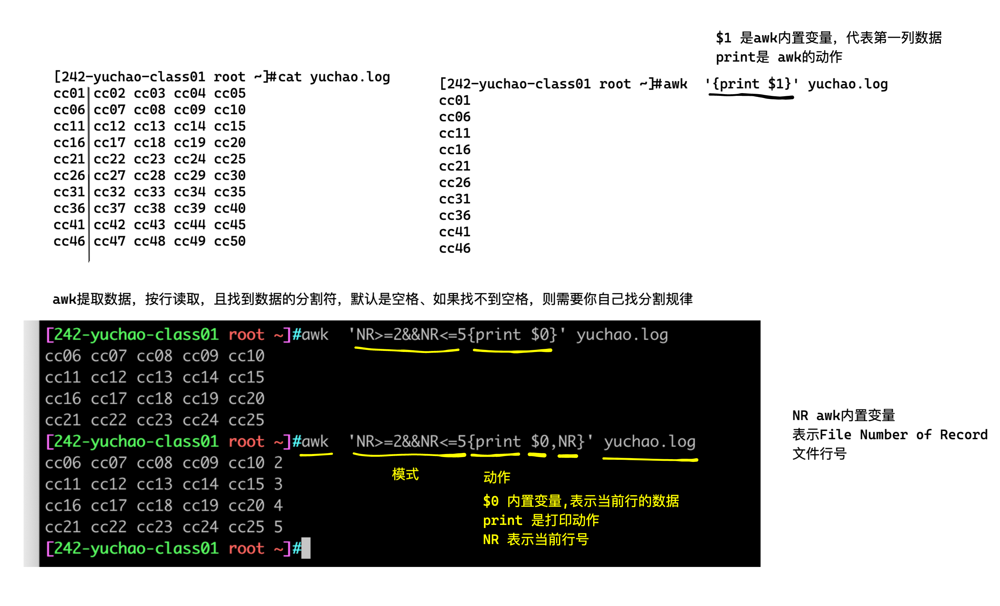
只有模式
awk不指定动作的话，默认打印整行信息
[242-yuchao-class01 root ~]#awk 'NR>=2&&NR<=6' yuchao.log
cc06 cc07 cc08 cc09 cc10
cc11 cc12 cc13 cc14 cc15
cc16 cc17 cc18 cc19 cc20
cc21 cc22 cc23 cc24 cc25
cc26 cc27 cc28 cc29 cc30
只有动作
没有模式，也就是没限定条件，
Awk默认处理所有行
[242-yuchao-class01 root ~]#awk '{print $1,$2}' yuchao.log
cc01 cc02
cc06 cc07
cc11 cc12
cc16 cc17
cc21 cc22
cc26 cc27
cc31 cc32
cc36 cc37
cc41 cc42
cc46 cc47
多个模式和动作
- 指定行，
NR==4，number of record，行号的记录 - 指定动作，
print $0,NF,NR- 内置变量$0表示整行数据
- NF表示Number of filed，字段的数量，表示这一行数据分了几列
- NR表示,number of record，行号的记录，表示在处理第几行
[242-yuchao-class01 root ~]#awk 'NR==4{print $0,NF,NR}' yuchao.log
cc16 cc17 cc18 cc19 cc20 5 4
小结
- pattern和action都要用单引号，防止shell作特殊解释（是交给awk去执行的，而不是bash）
- 不指定模式，awk默认处理输入的文件数据，每一行，每一列
- 如果指定模式，例如指定的行，awk就处理指定那一行的数据
- awk的动作，必须写在花括号里
{print}，括号里写入awk提供的命令。- 如果没有
{ }花括号，就会被识别为patter，而不是action
- 如果没有
- 注意给awk传入数据，一般都是file
图解awk执行过程
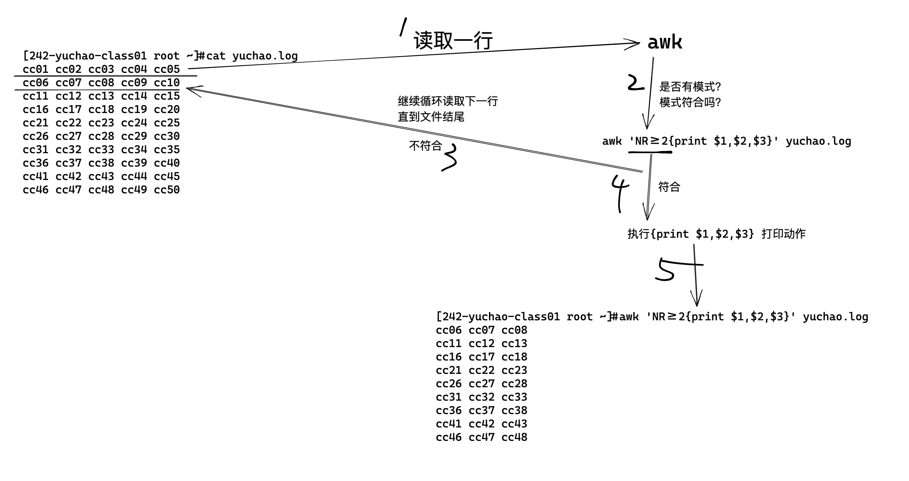
awk的字段（列）、记录（行）
| awk变量符号 | 作用 | 名称翻译 |
|---|---|---|
| NR | 行记录、行数据、awk处理的第几行 | umber of record |
| NF | 字段的数量，表示这一行数据分了几列， | Number of filed， |
| $1 | 第一个字段的数据、$2、$3以此类推 | |
awk如何处理行
[242-yuchao-class01 root ~]#cat yuchao.log
cc01 cc02 cc03 cc04 cc05
cc06 cc07 cc08 cc09 cc10
cc11 cc12 cc13 cc14 cc15
cc16 cc17 cc18 cc19 cc20
cc21 cc22 cc23 cc24 cc25
cc26 cc27 cc28 cc29 cc30
cc31 cc32 cc33 cc34 cc35
cc36 cc37 cc38 cc39 cc40
cc41 cc42 cc43 cc44 cc45
cc46 cc47 cc48 cc49 cc50
awk其他内置变量（翻译）
参考国外awk网址
awk的其他内置变量如下。
FILENAME：当前文件名
FS：字段分隔符，默认是空格和制表符。
Input field separator variable.输入字段分隔符变量。
RS：行分隔符，用于分割每一行，默认是换行符。
Record Separator variable，行分隔符变量
OFS：输出字段的分隔符，用于打印时分隔字段，默认为空格。
Output Field Separator Variable，输出字段分隔符变量
ORS：输出记录的分隔符，用于打印时分隔记录，默认为换行符。
Output Record Separator Variable，输出记录分隔符变量
OFMT：数字输出的格式，默认为％.6g。
RS变量/ORS变量
OFS变量：Output Field Separator Variable，输出字段分隔符变量
RS变量: record separator，记录分隔符
图解awk执行的输入、输出
awk 对每个要处理的输入数据认为都是具有格式和结构的,而不仅仅是一堆字符串
默认情况下,每一行 内容都是一条记录,并以换行符分隔(\n)结束
- awk默认下，每一行就是每一个record（记录）
- RS 即 record separator 输入输入数据 ,表示每个记录输入的时候分隔符.即行与行之间如何分隔.
- NR 即 number of record 记录(行)号,表示当前正在处理的记录(行)的号码
- ORS 即 output record separator 输出记录分隔符
修改RS/修改awk输入显示
[242-yuchao-class01 root ~]#head -3 yuchao.log
cc01 cc02 cc03 cc04 cc05
cc06 cc07 cc08 cc09 cc10
cc11 cc12 cc13 cc14 cc15
[242-yuchao-class01 root ~]#
[242-yuchao-class01 root ~]#
[242-yuchao-class01 root ~]#head -3 yuchao.log | awk -v RS=' ' '{print $0,NR}'
cc01 1
cc02 2
cc03 3
cc04 4
cc05
cc06 5
cc07 6
cc08 7
cc09 8
cc10
cc11 9
cc12 10
cc13 11
cc14 12
cc15
13
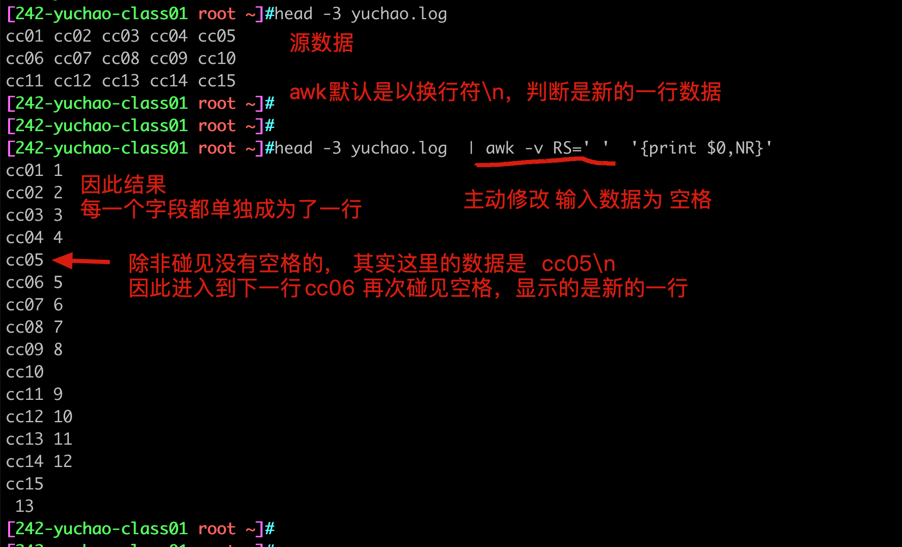
修改ORS/修改awk输出显示
你可以自由修改，awk处理完毕后的每一行的分隔符，也就是修改ORS变量。
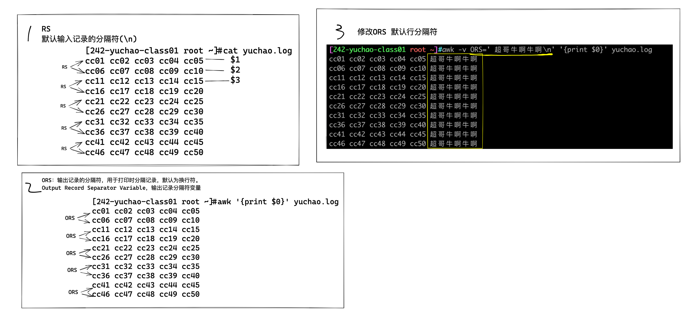
小结
- awk默认情况下，认为文件从头到尾是一整行数据，直到碰见换行符
\n 回车换行符，因此本行结束，进入下一行- 可以通过修改awk的RS变量，修改行输入的分隔符
面试题，统计单词出现频率
I have a dog, it is lovely, it is called Mimi. Every time I go home from school, Mimi always cruising around me, I will go to the kitchen to get a piece of meat to it, it lay on the floor to eat. My legs and then jump to bark "Wang "called, so I picked up Mimi, it is the opportunity to lick my hand, making me laugh.I like Mimi, like puppies.
代码思路
- 先让所有单词合并为1列，注意是一列、排成一队、然后排序，合并重复的，且统计重复次数
1.sed解决
[242-yuchao-class01 root ~]#sed -r 's#\s#\n#g' english.txt | sort -n | uniq -c | sort -nr
2. tr命令解决 tr 用于字符串替换 tr old_str1 new_str2
整体思路和sed一样
[242-yuchao-class01 root ~]#tr ' ' '\n' < english.txt | sort -n | uniq -c | sort -nr
3.grep处理
[242-yuchao-class01 root ~]#grep -E '[a-zA-Z]+' english.txt -o | sort -n | uniq -c | sort -nr
4.awk处理，修改数据的输入行分割符号，RS修改为，除了英文字母以外的任意符号，视为换行
[242-yuchao-class01 root ~]#awk -v RS='[^a-zA-Z]+' '{print $0}' english.txt | sort -n | uniq -c | sort -nr
5. awk处理，修改数据的输入行分割符号，RS修改为遇见空格，就换行
[242-yuchao-class01 root ~]#awk -v RS=' ' '{print $0}' english.txt | sort -n | uniq -c | sort -nr
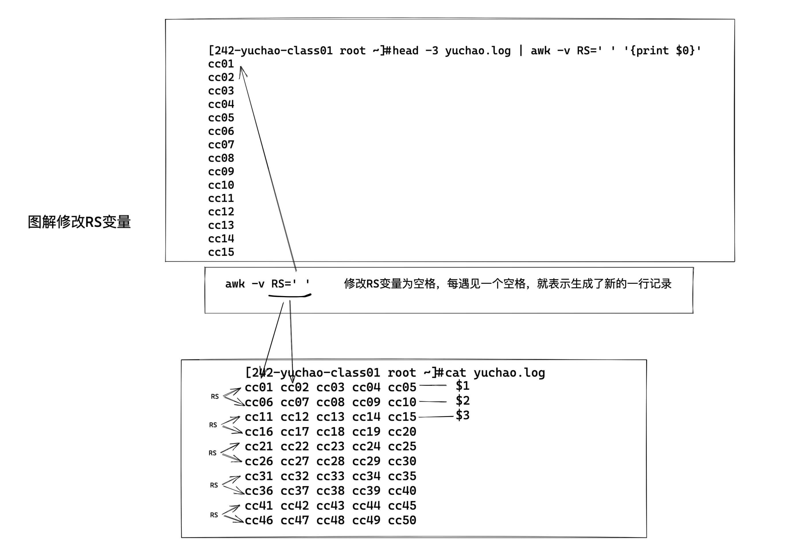
行记录$0
在 awk 中,$0 表示整行,其 awk 使用$0 来表示整行数据。
字段记录$1、$2、$3
awk默认根据空格和制表符，将每一行数据分割为若干个字段，依次用$1、$2、$3代表第一个字段、第二个字段、第三个字段等等。
[242-yuchao-class01 root ~]#echo 'this is chaoge linux' | awk '{print $3}'
chaoge
NR 记录号、行号
$0表示整行的数据
NR 表示记录号、也就是行号
awk添加文本行号
[242-yuchao-class01 root ~]#awk '{print NR,$0}' yuchao.log
1 cc01 cc02 cc03 cc04 cc05
2 cc06 cc07 cc08 cc09 cc10
3 cc11 cc12 cc13 cc14 cc15
4 cc16 cc17 cc18 cc19 cc20
5 cc21 cc22 cc23 cc24 cc25
6 cc26 cc27 cc28 cc29 cc30
7 cc31 cc32 cc33 cc34 cc35
8 cc36 cc37 cc38 cc39 cc40
9 cc41 cc42 cc43 cc44 cc45
10 cc46 cc47 cc48 cc49 cc50
小结
- NR(number of recprd)存放着每个记录的号(行号)读取新行时候会自动+1
- RS(record separator)是输入数据的记录的分隔符
- 简单理解就是可以指定每个记录的结尾标志
- 修改RS就是在指定一行记录的结束
- 当修改了RS变量，最好配合NR变量查看变化，查看每一行是否生成了
- 可以修改ORS变量，修改awk的最终打印结果，每一行的输出格式，默认是换行，你可以改成其他的。
字段（列）
每条记录都是由多个区域(field)组成的
默认情况下区域之间的分隔符是由空格(即空格或制表符)来分隔
将分隔符记录在内置变量 FS中
每行记录的区域数据保存在 awk 的内置变量 NF 中
图解awk字段
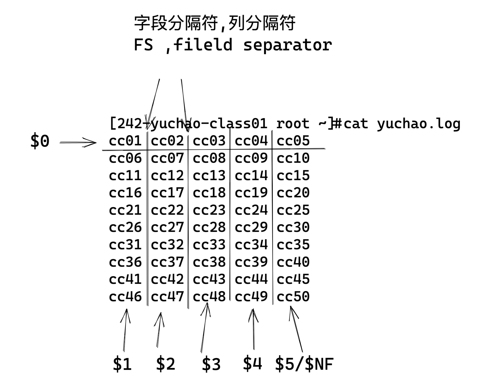
- FS 即 fileld separator,输入字段(列)分隔符,分隔符就是菜刀,把一行字符串切为很多区域
- NF 即 number of fileds,表示一行中列(字段)的个数,可以理解为菜刀切过一行后,切成了多少份
指定分隔符
当文本不是以空格分割，你得自己找特征，进行切蛋糕。
- FS的值可以是固定的字符、也可以是正则表达式
例如/etc/passwd文件 ，提取用户信息
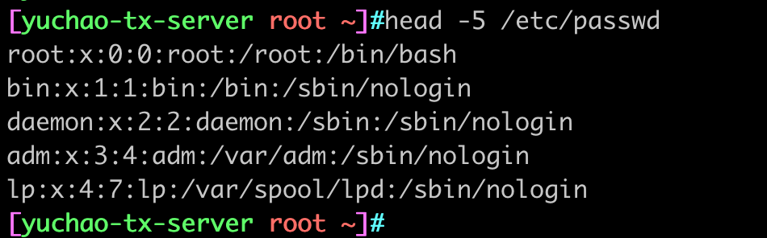
提取用户名、登录解释器
awk -F 参数，后面跟着的是指定的分隔符
[yuchao-tx-server root ~]#awk -F ':' '{print $1,$NF}' /etc/passwd | column -t
提取用户账号密码信息
生成测试数据，python脚本
#导入random模块生成随机数字
import random
#导入CSV模块，用于数据写入到CSV
import csv
#创建一个空列表，后面可以把生成的用户名、密码、身份证号码存放进来
list = []
#把CSV文件绝对路径赋值给一个变量
file_path = 'user_id.csv'
#从1开始循环100次
for i in range(1, 101):
#生成18位随机身份证号，生成的随机数在100000000000000000,和999999999999999999之间
ID = random.randint(100000000000000000, 999999999999999999)
#添加用户名到列表list中，用户名默认以test开头，后面跟上数字，数字是当前循环的次数，如：test1
list.append('test%s' % i)
#添加用户密码到list中，密码全部默认为123456
list.append('123456')
#把生成的身份证号码添加到list，添加时需要在后面加“\t”，不加“\t”则在CSV中会显示成科学计数，如：8.39381E+17
list.append(str(ID) + '\t')
#下面三行是把list内容写入到CSV文件中的代码
with open(file_path, 'a', newline='') as f:
writer = csv.writer(f)
writer.writerow(list)
#把list内容清空
list = []
awk用来提取此类数据是最合适且方便的了。
提取前10位用户的数据
[yuchao-tx-server root ~]#awk 'NR<=10{print $0}' user_id.csv
test1,123456,270241396203635909
test2,123456,130151351475223964
test3,123456,864152877321327833
test4,123456,411585875542697231
test5,123456,510201954047003181
test6,123456,316681826889452945
test7,123456,735133350806256761
test8,123456,737257402318119726
test9,123456,598126653502814276
test10,123456,438232474130569993
提取30号用户的用户名、身份证号
[yuchao-tx-server root ~]#awk -F ',' '/test30/{print $1,$3}' user_id.csv
test30 780364619364745629
提取ip地址
[yuchao-tx-server root ~]#ifconfig eth0| awk 'NR==2{print $2}'
10.141.32.137
修改FS和OFS变量
刚才我们练习了
RS和ORS
- RS、输入记录分隔符，决定awk如何分隔每一行（默认是\n）
- ORS，输出记录分隔符，决定awk如何输出每一行（默认是\n）
FS和OFS
- FS是输入字段分隔符，决定awk输入数据后的每一个字段分隔符是什么，默认是空格
- OFS是输出字段分隔符，决定awk输出每个字段的分隔符是什么，默认是空格
指定FS分隔符（在哪个位置切蛋糕）
两个方式
1、参数
awk -F '分隔符'
2.修改变量
awk -v FS='分隔符'
执行OFS分隔符（切完后的字段分隔符）
两个方式
1、参数
awk -F '分隔符'
2.修改变量
awk -v FS='分隔符'
案例
修改每一个字段之间的分隔符为#
[yuchao-tx-server root ~]#awk -v OFS='#' '{print $1,$2,$3,$4,$5}' chaoge.log
cc01#cc02#cc03#cc04#cc05
cc06#cc07#cc08#cc09#cc10
cc11#cc12#cc13#cc14#cc15
cc16#cc17#cc18#cc19#cc20
cc21#cc22#cc23#cc24#cc25
cc26#cc27#cc28#cc29#cc30
cc31#cc32#cc33#cc34#cc35
cc36#cc37#cc38#cc39#cc40
cc41#cc42#cc43#cc44#cc45
cc46#cc47#cc48#cc49#cc50
改造/etc/passwd格式
1.读取文件数据（注意提取分隔符规律）
[yuchao-tx-server root ~]#head -5 /etc/passwd | awk -F ':' '{print $1,$2,$3,$4,$5,$6,$7}'
2.修改格式化后的数据
head -5 /etc/passwd | awk -F ':' -v OFS='---' '{print $1,$2,$3,$4,$5,$6,$7}'
图解修改FS、OFS
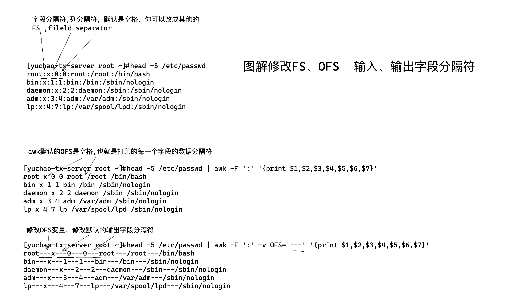
总结行、列
- RS、ORS、代表了awk的输入、输出、关于行的分隔符
- FS、OFS、代表了awk的输入、输出、关于列的分隔符
- 对于不同的文本，需要选择合适的FS、合适的菜刀，来分割出左右可以便于提取的数据
- NR表示行号、记录号
- NF表示每一行的字段数、有多少列
- $符号一般用于提取某一列的数据，如$1、$2
- $NF表示最后一列的数据
关于awk基础快速入门总结
- awk的命令行、语法结构
- awk的模式、动作
- awk的行、列
- awk的列、也就是字段是核心需要提取的某一块数据。